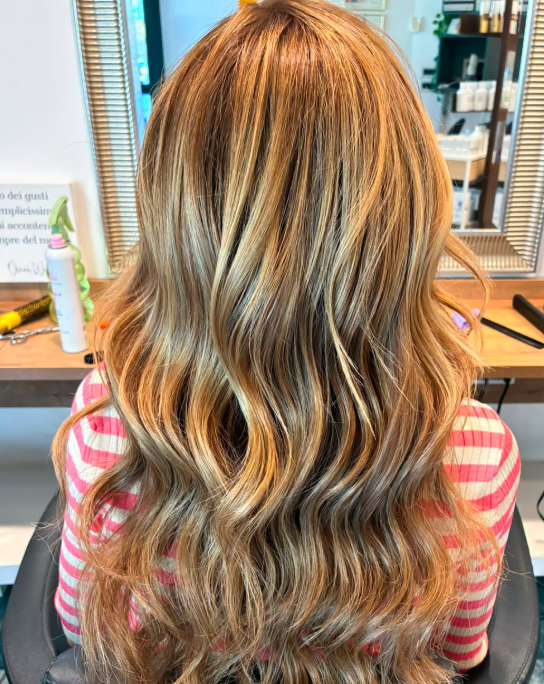
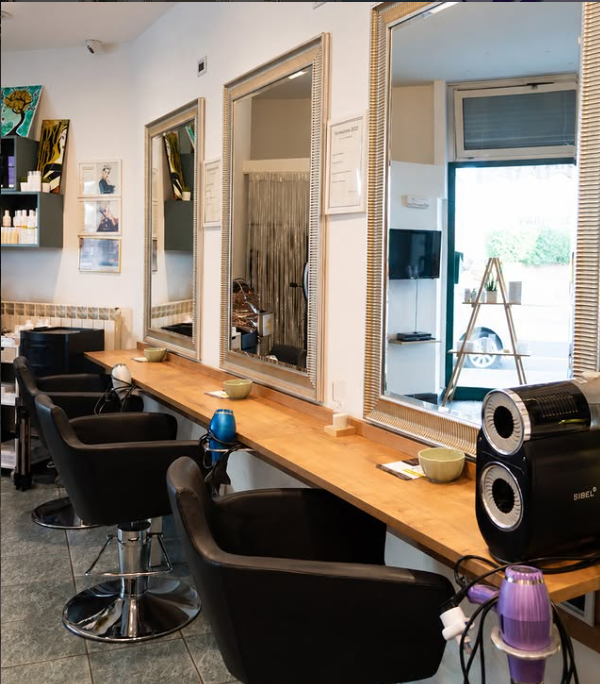

Taglio & Styling
Forme, volumi e dettagli studiati per valorizzare il viso e accompagnare la tua quotidianità.
Hair salon · Senigallia
Ascolto, tecnica e cura. Luisa e Federica trasformano ogni appuntamento in un momento dedicato a te e ai tuoi capelli.

Bellezza · Cura · Personalità
Il salone
Da LeF ogni consulenza parte dall’ascolto. Luisa e Federica accolgono desideri, abitudini e caratteristiche dei capelli per creare risultati belli, portabili e davvero personali.
Un ambiente intimo a Senigallia, dove competenza e semplicità fanno sentire subito a proprio agio.

Cosa facciamo
Forme, volumi e dettagli studiati per valorizzare il viso e accompagnare la tua quotidianità.
Consulenza personalizzata, nuance armoniose e tecniche pensate per un risultato luminoso e naturale.
Dal liscio ai ricci definiti, una piega curata che rispetta la natura dei capelli e dura nel tempo.
Percorsi mirati, incluso il trattamento all’ossigeno, per ritrovare equilibrio, volume e benessere.
Dicono di noi
“Hanno subito capito le mie esigenze, trovando il colore giusto per i miei capelli.”
“Il miglior parrucchiere di Senigallia. Luisa e Federica sono fantastiche e bravissime.”
Laura“Il trattamento all’ossigeno ha funzionato benissimo: più volume e una cute finalmente in equilibrio.”
Maria VittoriaVia Piave, 2/8
60019 Senigallia AN